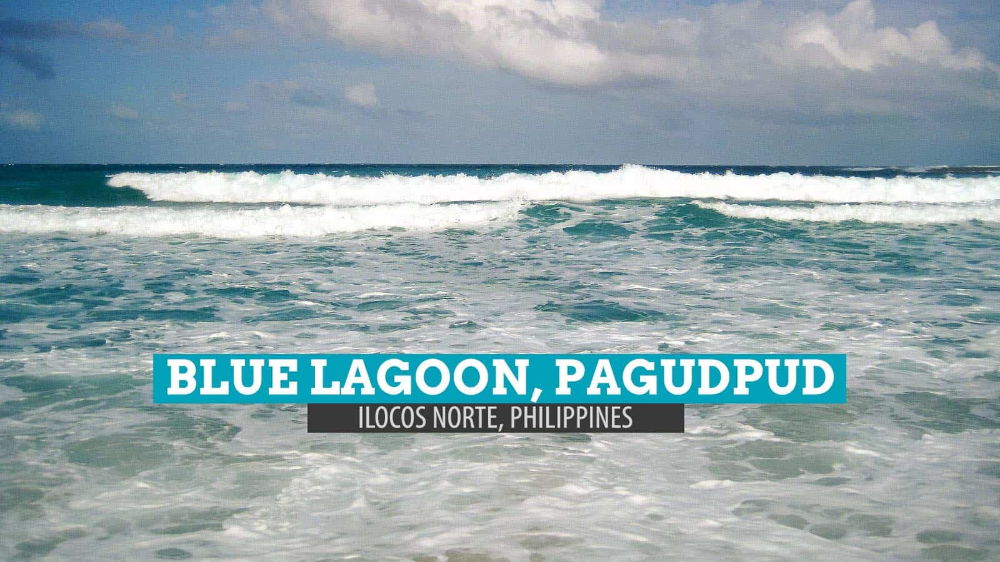
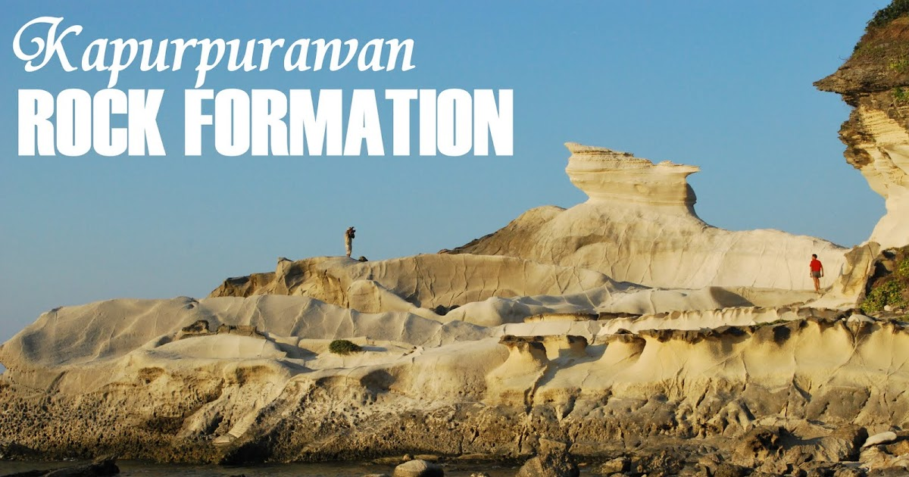
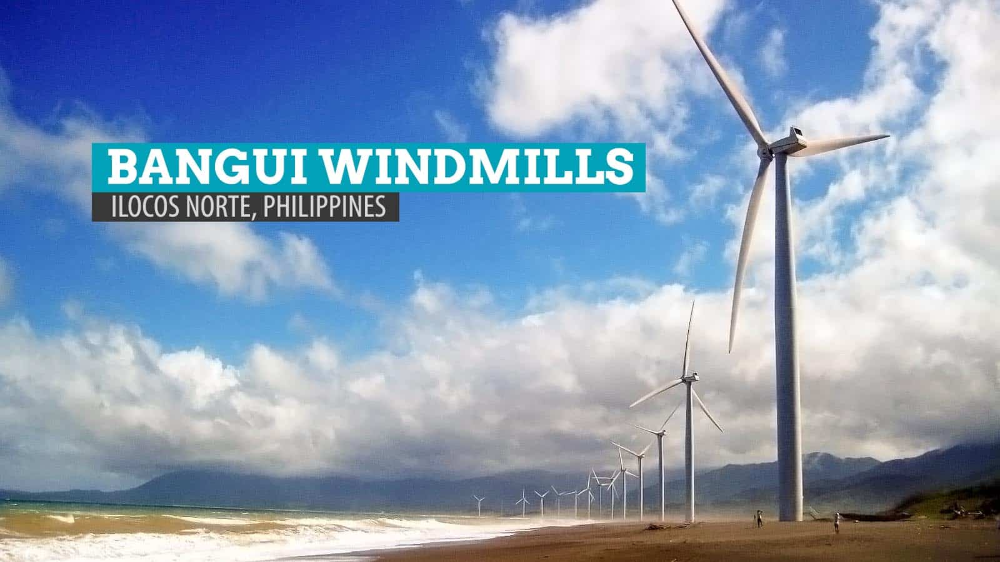
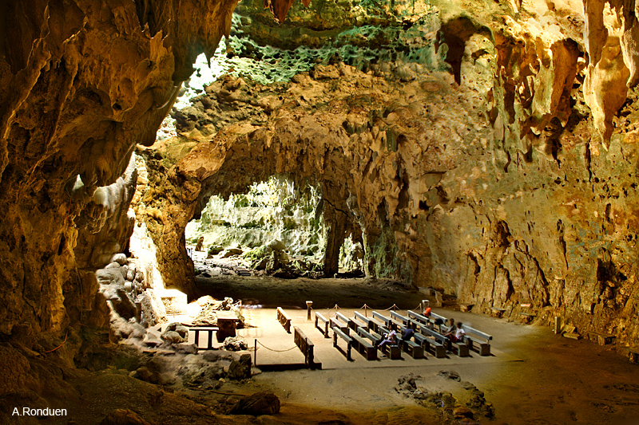
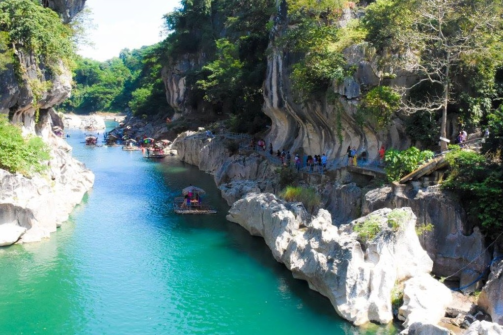
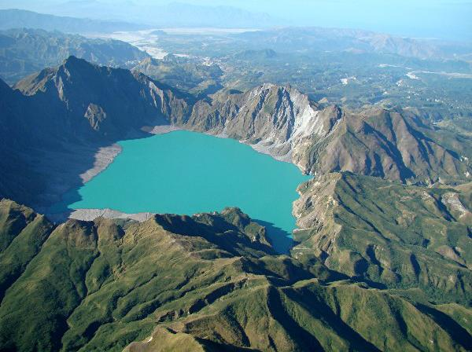
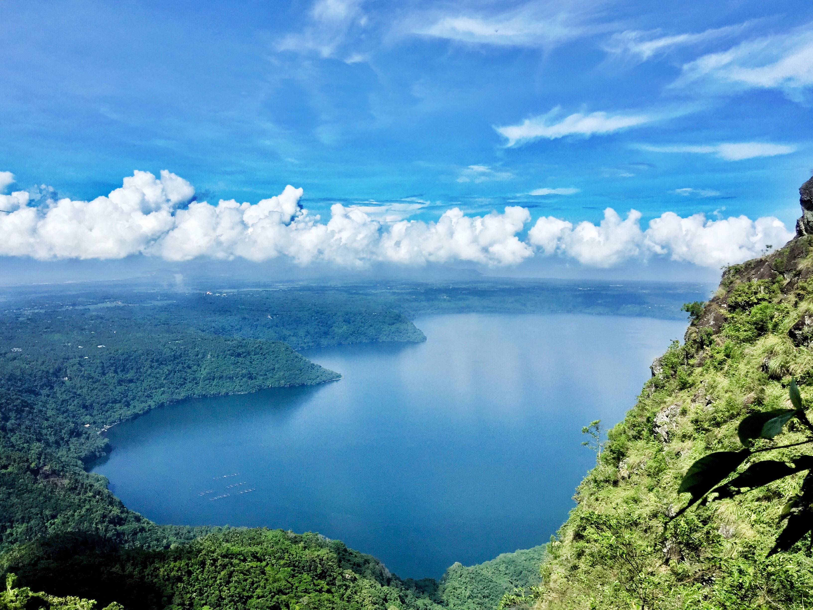
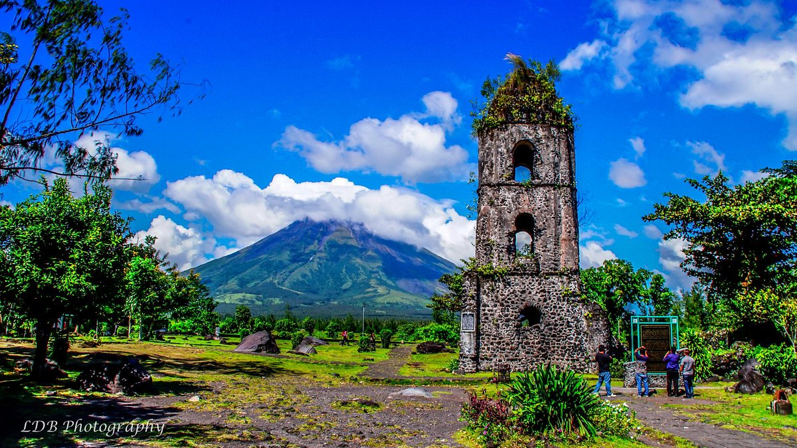

San Agustin Church of Paoay

The Saint Augustine Church commonly known as the Paoay Church, is a Roman Catholic
church in the Municipality of Paoay, Ilocos Norte in the Philippines
Pagudpud's Blue Lagoon Beach,
Blue Lagoon, or more broadly known as Pagudpud beach is one of Ilocos Norte's pride.
It's a paradise with a breathtaking view of nature's grandeur.
Kapurpurawan White Rock Formation
Located at the north of the province is the Kapurpurawan Limestone Formation,
a work of geological art that would leave every nature loving tourist speechless..
Bangui Windmills
The Bangui Wind Farm is a wind farm in Bangui, Ilocos Norte, Philippines. The wind farm uses 20 units of 70-meter high Vestas V82
1.65 MW wind turbines, arranged in a single row stretching along a 9-kilometer shoreline of Bangui Bay, facing the South China Sea
Callao Cave
Callao Cave is one of 300 limestone caves located in the Barangays of Magdalo and Quibal in
the municipality of Peñablanca, about 24 km northeast of Tuguegarao City..
Vigan City
Vigan is a city in the Philippines, on the west coast of Luzon island. It's known for its preserved Spanish colonial and Asian architecture.
Calle Crisologo dominates the Mestizo district, with its cobblestone streets, malecón, horse-drawn carriages and rustic mansions.
Vigan City
Vigan is a city in the Philippines, on the west coast of Luzon island. It's known for its preserved Spanish colonial and Asian architecture.
Calle Crisologo dominates the Mestizo district, with its cobblestone streets, malecón, horse-drawn carriages and rustic mansions.
Taal Volcano
Taal Volcano is a large caldera filled by Taal Lake in the Philippines. Located in the province of Batangas,
the volcano is second of the most active volcanoes in the country,
Baler
Baler is a town on the Philippine island of Luzon. In its center, Museo de Baler chronicles colonial history.
Mount Pinatubo
Mount Pinatubo is an active stratovolcano in the Zambales Mountains, located on the tripoint boundary
of the Philippine provinces of Zambales, Tarlac and Pampanga,
Enchanted Kingdom
Enchanted Kingdom, is a theme park in the Philippines. It is located in Santa Rosa,
Laguna. It has a land area of 25 hectares..
MayonVolcano
Mayon, also known as Mount Mayon and Mayon Volcano, is an active stratovolcano in the province of Albay in Bicol, Philippines